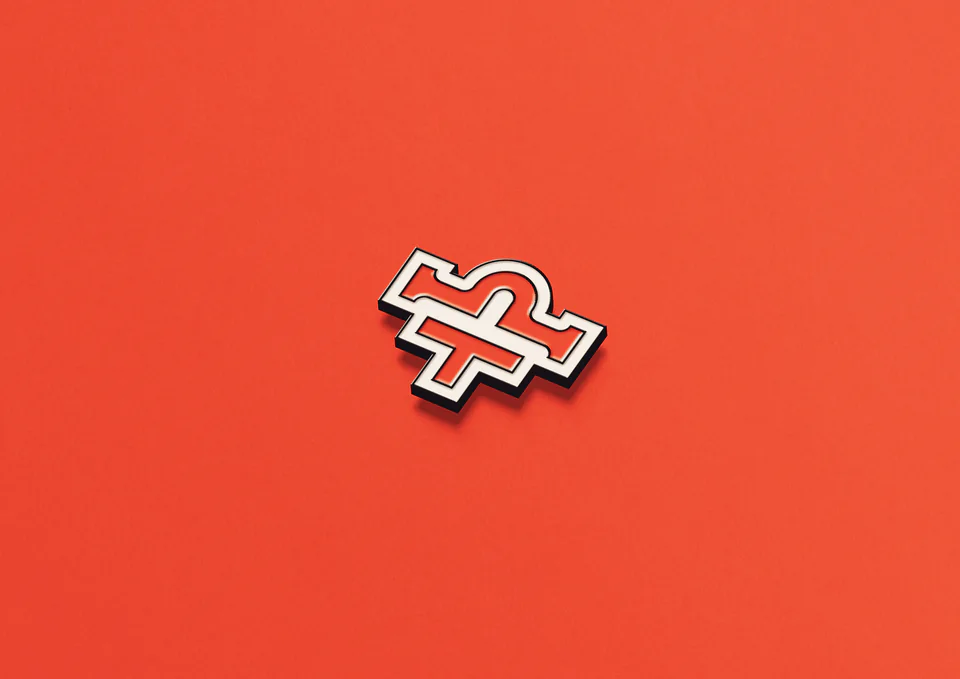
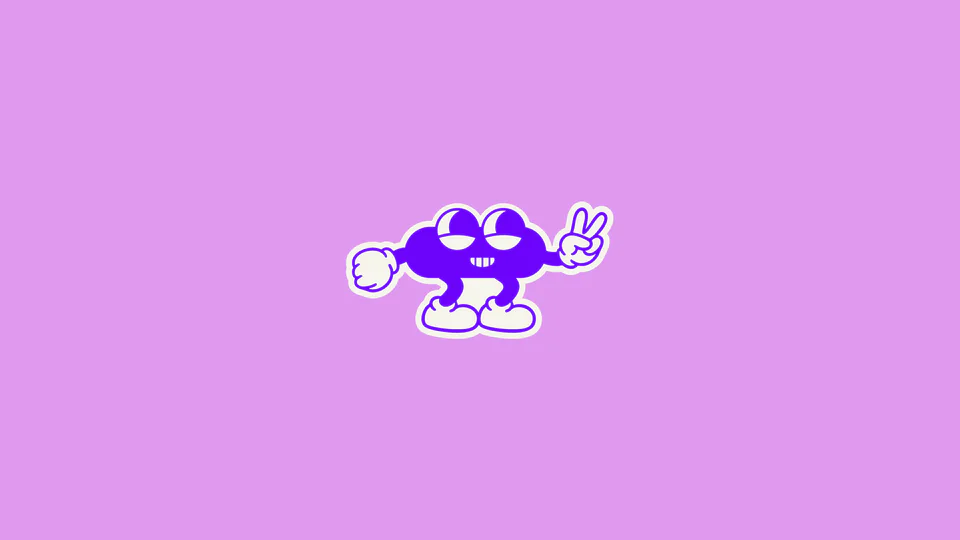

Acaso
A brand new identity for a coastal town in southern Italy with deep cultural roots and a strong connection to the Adriatic Sea. This place branding project was developed as a submission for the “Rebranding Termoli” international competition.
A brand new identity for a coastal town in southern Italy with deep cultural roots and a strong connection to the Adriatic Sea. This place branding project was developed as a submission for the “Rebranding Termoli” international competition.
To design an identity that truly belongs to Termoli, we began by walking its streets, observing its details, and mapping its textures. Every stone, curve, arch, doorway, tower, and coastline carries the memory of a layered history and a living community.

A brand new identity for a coastal town in southern Italy with deep cultural roots and a strong connection to the Adriatic Sea. This place branding project was developed as a submission for the “Rebranding Termoli” international competition.
A compilation of scenes and posters made during the pandemic as a hobby. This was my way of passing the time while learning 3D modeling as a new skill.

Time Acaso’s visual identity was designed to support the company’s employee branding by bringing its people closer together. Inspired by the team’s diverse profiles and skill sets, the system reflects this plurality while creating a shared sense of belonging.